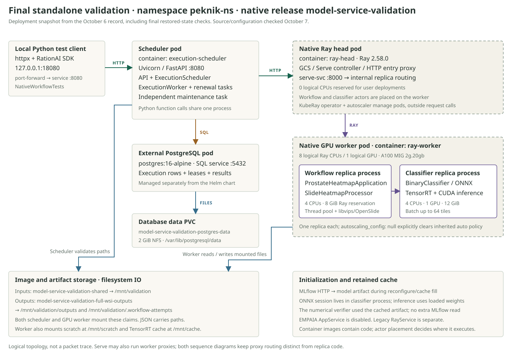

Follow the real test across processes and containers
The immediate and scheduled paths execute the same prostate heatmap workflow. Their request lifetime, durable state, and output paths differ. This reference follows the final October 6 standalone validation, including its restored-state rerun.
The test this diagram describes
The source is test_schedule_replay_conflict_and_immediate_run_share_output_contract. It submits the real Mirax WSI and its TIFF tissue mask through the public HTTP API. The initial admission uses httpx.Client; polling, fresh-client schedule replay, and immediate execution use the RationAI SDK. The workflow runs on the deployed GPU worker.
- Build named shared-path inputs with root
/mnt/validation, stride fraction0.5, and TIFF tile dimensions256 × 256. - POST a schedule request with an idempotency key and 900-second timeout. Assert HTTP 202 and the five public execution fields.
- Replay the same request and expect HTTP 200 with the same execution ID. Change the requested timeout under the same key and expect HTTP 409.
- Poll through
client.executions.get, approximately once per second, untilsucceeded. Check the namedheatmapartifact. - Open a fresh SDK client and replay the admitted request. It retrieves the terminal execution and result.
- Call
client.workflows.runwith the same inputs and computation settings, using an immediate output name. Keep that HTTP request open until its result returns. - Compare output names, kinds, and media types. Verify file bytes through separate shared-file access. During the recorded run, the suite deferred filesystem verification; worker-side checks established byte equality.
The final active rerun completed two tests in 133.556 seconds. Its successful execution was 9f042684-b78c-4a47-b407-fc7ed64c44e3. Separate verification found both TIFFs equal to the corrected baseline, SHA-256 f7920599c51fb6f60483baa76678edcc4f455423f10d2897bcbe1395aafeacfc, size 15,474,188 bytes. This timing is for the suite, not a measured duration for one inference. Final restored-state checks.
The original October 4 warm run predates the padded-grid correction. Its old artifact hash is a historical observation. The older demos/validation_sdk.py uses dummy-profile assumptions and is not the test described here. Evidence routing.
What is deployed in each container

| Container | Image / startup | Code actually running | Storage and placement |
|---|---|---|---|
Schedulerexecution-scheduler | cerit.io/stefanpeknik/model-service-scheduler:standalone-final-20261006-1Uvicorn execution_scheduler.main:app, port 8080 | runtime.create_app builds FastAPI, PostgreSQL repository, standalone provider, HTTP dispatch, synchronous service, inference proxy, and health checks. The API, worker, renewal, and maintenance tasks share the Uvicorn process. | One pod replica. Mounts inputs and output claims so standalone preparation can resolve paths. No slide tiling or classifier inference runs here. |
Ray headray-head | cerit.io/stefanpeknik/model-service-ray-validation:standalone-final-20261006-1Ray 2.58.0; Serve port 8000; dashboard port 8265 | Ray cluster control, Serve controller, and HTTP entry. The image also contains model and workflow code, but the native compute replicas require resources supplied by the worker. | Head advertises zero logical CPUs for user deployments. KubeRay and its autoscaler manage worker lifecycle. These components do not create one pod per schedule request. |
Ray GPU workerray-worker | cerit.io/stefanpeknik/model-service-workflow-gpu:standalone-final-20261006-1Ray worker, OpenSlide, libvips, Ratiopath, ONNX Runtime GPU, CUDA/TensorRT | Separate replica processes for ProstateHeatmapApplication and BinaryClassifier. Workflow code reads images and reconstructs TIFFs. Classifier code owns the ONNX session and GPU inference. | One A100 MIG 2g.20gb device. Ray advertises 8 CPUs and 1 GPU. Workflow reserves 4 CPUs / 8 GiB; classifier reserves 4 CPUs / 1 GPU / 12 GiB. Kubernetes container request is 4 CPUs / 23 GiB; limit is 8 CPUs / 24 GiB. These are different accounting layers. |
| PostgreSQL external database Deployment | postgres:16-alpineservice model-service-validation-postgres, PostgreSQL protocol | Stores execution identity, invocation, internal work, leases, accepted result, safe errors, and timestamps. Application code uses Psycopg from the scheduler process. | Separately managed from the Helm release. Database data is on the retained 2 GiB NFS PVC model-service-validation-postgres-data. The original emptyDir was migrated during validation. |
Image identities and deployment observations are recorded in the validation report. Source configuration is in values.full-wsi.yaml, RayService template, scheduler template, worker configuration, and the database runbook. Dockerfiles describe scheduler, head, and GPU packaging. The actual final GPU image reused retained dependency layers and refreshed source; consult the record for that build boundary.
Why the scheduler has its own service
The accepted placement decision keeps durable execution management available when Ray computation is unavailable. The scheduler can accept work, read stored status, commit cancellation, and advance deadlines while GPU workers are absent or Ray is unreachable, as long as its own process and PostgreSQL remain available.
PostgreSQL, leases, and fencing provide durability. Separate deployment provides an independent availability boundary. Hosting a scheduler inside Serve is technically possible, but its public API and background tasks would share the availability of that deployment.
| Placement | What it depends on |
|---|---|
| Inside the workflow replica | That compute replica and its host worker must remain available. |
| Dedicated CPU Serve deployment | Independent CPU capacity and a continuously running replica, plus Serve routing for its public API. |
| Separate service, chosen here | Its own process and PostgreSQL. Ray availability controls processing, while durable API and maintenance can continue. |
The cost is another Deployment, configuration, and communication boundary. The recorded scaled-zero controller-restart test illustrates the benefit; it does not prove availability during every Ray failure. See the validation record.
Forwarding immediate calls through the public API process is a separate routing choice. An ingress can preserve one public origin and route immediate calls to Ray Serve while routing admission, polling, and cancellation to the scheduler. The placement decision does not approve a routing change. The diagrams above retain the deployed October 6 path; the current local application wiring is in model_service/runtime.py.
Read the arrows by transport
await alone says nothing about transport. await provider.prepare(...) in this standalone path stays in the scheduler process. await httpx_client.post(...) crosses HTTP. await handle.predict.remote(tile) sends a Ray actor request. await repository.settle(...) is a Python interface call that performs PostgreSQL IO in the production adapter. Provider; HTTP dispatch; Ray predictor; Repository.
The workflow and classifier actors share a container but have separate process memory. A deployment handle uses Ray's request routing and actor transport; it does not call the public model HTTP route. Ray decides whether payloads use direct actor transport or object-store mechanisms. The diagrams identify the application boundary without claiming a captured wire protocol. Ray Serve architecture.
PVC access is a filesystem API from Python or native libraries. These claims use NFS storage, so filesystem operations may involve network traffic underneath; they are not model-service HTTP uploads. Kubernetes port-forward carries the local HTTP stream to the scheduler service's selected pod. The tested origin was loopback only; the validation configured no external ingress.
Immediate execution, step by step

Before the Ray replica
The SDK's workflows.run adds an absolute deadline_at using the client clock. The test passes a 900-second workflow timeout and a 930-second HTTP timeout. The API's run_workflow awaits SynchronousWorkflowService.run under disconnect monitoring. That service checks the workflow definition, invocation, and configuration, then calls HTTPWorkflowDispatch.run.
Dispatch serializes a WorkflowRunRequest and sends HTTP JSON to http://model-service-validation-serve-svc.peknik-ns.svc.cluster.local:8000/workflows/prostate-heatmap/. Its HTTP timeout uses the remaining invocation deadline. This is a second HTTP request issued by the scheduler container.
Inside the replica
Ray routes the request to ProstateHeatmapApplication.run. Its call to run_workflow_http invokes WorkflowApplication.run, which creates shared-storage access, enforces the deadline, runs the heatmap workflow, validates the returned artifact, and closes access. These functions share the workflow actor process.
The result returns through the proxy, dispatch, synchronous service, and public API to the SDK. The JSON contains a named file reference. The TIFF remains on the output PVC.
Read SDK workflows, api.run_workflow and _run_while_connected, synchronous.run, dispatch.run, Ray ingress, HTTP envelope, and WorkflowApplication.run.
Scheduled execution, step by step

The admission path is covered in lesson 01. After the repository commits, the client receives HTTP 202 and an execution ID. The scheduler's running() context already owns a background ExecutionWorker. The request does not start a new Kubernetes job or container.
worker.run_once calls claim_due. PostgreSQL selects eligible work, enforces the per-workflow capacity, and stores running state, attempt count, owner, fencing token, and lease. The worker starts an execution task and a renewal task in its process. _execute dispatches the same workflow via HTTP, with the fencing token supplied as the processing-attempt ID in execution context and x-processing-attempt-id.
With the preset's 60-second lease, renewal runs approximately every 20 seconds while the claim is active. Independent maintenance runs on the 0.5-second worker poll interval; it can expire queued deadlines while inference is still running. The API can answer polling requests during these awaits. The claim loop runs one active claim at a time in this scheduler worker.
On workflow success, the worker passes ProcessingSucceeded to repository.settle with its fencing token. One transaction stores the result and schedules provider_finish, while public status remains running. A subsequent worker claim calls StandaloneProviderAdapter.finish, which is a no-op. Settling ProviderFinishSucceeded changes the execution to succeeded and clears pending work.
Every executions.get is a new HTTP GET. It calls scheduler.get → repository.get → scheduler._view; it does not ask the Ray replica for status. The result is present in public polling only after success finish. The standalone provider performs no upload, although its finish still passes through the common state machine.
Read scheduler.running / schedule / get / _view, worker.run / run_once / _execute / _renew_while_running, claim_due / renew / settle, claim and settlement transitions, standalone.finish, and base lease and polling defaults.
The shared computation inside the GPU worker
ProstateHeatmapApplication.reconfigurecomposesWorkflowApplication,ProstateHeatmapWorkflow,SlideHeatmapProcessor, andRayHeatmapPredictor("prostate-classifier-1"). This happens during replica configuration.ProstateHeatmapWorkflow.runresolves named slide and mask inputs, selects the final output path, and gives the processor a sibling temporary output path.RayHeatmapPredictor.configurationusesserve.get_app_handleandget_config.remote. The preset supplies a 512-pixel input tile, one output score, one channel, and target MPP0.468. This is a Ray call to the classifier actor.SlideHeatmapProcessor.buildselects the closest available slide level, derives stride asround(0.5 × 512) = 256, and enumerates tile positions. The recorded slide's actual selected-level resolution was about0.4855947955micrometres per pixel; target and selected resolution are distinct.- A local
ThreadPoolExecutorreads mask and slide windows with OpenSlide.fetch_tissue_tileskips all-zero mask windows and returns model-ready channel-first image arrays. Reading uses filesystem IO, not HTTP. predict.remote(tile)crosses into the classifier actor. Its@serve.batchcombines requests, up to 64 tiles with a 0.05-second batch wait in this preset.BinaryClassifier.predictstacks the arrays and calls its existing ONNX session. CUDA/TensorRT work happens inside that actor's native runtime.- Scores return via Ray.
MaskBuilder.update_batchaccumulates scores and overlap contributions. The processor reconstructs at the padded grid scale, then crops to slide extent, converts scores to uint8, and writes a tiled pyramidal BigTIFF through libvips. - The workflow confirms the temporary file exists, atomically replaces the final path with
os.replace, and returnsSharedArtifact.WorkflowApplicationchecks declared outputs and artifact visibility before returning, then closes input access.
These operations are defined in composition, workflow, processor, Ray predictor, tile reader, classifier, and classifier preset. Model weights are loaded during classifier reconfiguration through the MLflow model provider; each tile request uses the already loaded session.
What travels, and what stays in storage
| Boundary | Payload |
|---|---|
| Client → scheduler → Ray workflow | JSON containing named relative input paths, configuration, input-access root, and deadline. Scheduled dispatch adds internal attempt metadata. Slide and mask bytes stay on the input PVC. |
| Workflow → classifier actor | Tile arrays via the Ray deployment handle. This path bypasses the classifier's public root HTTP handler and its LZ4 decoding. |
| Classifier → workflow | Model output scores via Ray. The full-WSI preset has one scalar score per tile. |
| Workflow → output PVC | Completed TIFF bytes. Immediate path: /mnt/validation/outputs/<name>-immediate.tiff. Scheduled path: /mnt/validation/.workflow-attempts/<hash>/outputs/<name>.tiff. |
| Workflow result → scheduler → client | JSON SharedArtifact reference with path and media type. Scheduled execution also persists that normalized result in PostgreSQL. No artifact download route is involved. |
The output claim is mounted at both /mnt/validation/outputs and /mnt/validation/.workflow-attempts in scheduler and GPU worker. Input and output claims remain separate. Attempt-specific paths are generated by hashing the processing-attempt ID in SharedStorageAccess. Compare artifact content and output contracts; the two returned paths are intentionally different.
The separate verification paths
The numerical verifier also made 380 selected-tile HTTP inference checks and compared eight scores against CPU ONNX Runtime with the cached artifact. Those requests used the public raw-model route. They followed a different entry path from workflow-to-model prediction. Real WSI results and verification evidence.
- 1. Tile requestLZ4-compressed RGB bytes to
/prostate-classifier-1. - 2. Scheduler HTTP proxy
HttpInferenceProxyforwards bytes over HTTP to the native model origin. - 3. Classifier HTTP ingressServe routes to
BinaryClassifier.root, which decompresses, reshapes and callspredictin that actor. - 4. Score responseThe scalar prediction returns through the HTTP proxy to the verifier.
inference.py selects the native origin for this model through INFERENCE_MODEL_ORIGINS. Other model routes use the separately configured legacy origin. In the heatmap workflow, RayHeatmapPredictor.predict already has a tile array and calls predict.remote, so it bypasses HTTP compression and BinaryClassifier.root.
Worker-side filesystem verification opened the returned TIFF paths, compared their hashes and sizes, and checked reconstruction pixels. That evidence is separate from the HTTP suite's checks of named output contracts. Returning a valid artifact reference does not, by itself, establish numerical image content or make the file accessible on the test client's local filesystem.
Limits that follow from these boundaries
| Boundary | Consequence | Recorded evidence |
|---|---|---|
| Immediate HTTP lifetime | No durable execution ID or scheduler retry lifecycle is created. Disconnect monitoring asks for cancellation; native blocking work may finish later. The client deadline, HTTP timeout, and worker runtime deadline are separate controls. | The happy-path test kept the request open and got a result. It does not prove immediate cold-start or every cancellation timing. |
| Scheduled HTTP admission | Commit precedes HTTP 202. Losing the response can make admission ambiguous to the client, so it must replay the same key. An idempotent admission does not imply exactly-once inference. | Replay/conflict and fresh-client terminal replay passed. A queued admission survived scheduler and database replacement in separate checks. |
| Internal HTTP dispatch | A transport failure may leave the remote outcome unknown. Confirmed 429 rejection requeues without consuming a processing attempt; uncertain outcomes consume the retry budget. The full-WSI preset allows two processing attempts. | The happy-path suite did not exercise these branches. Separate in-flight scheduler replacement observed running → queued → running → succeeded across lease expiry. |
| Lease and fencing | A replacement worker can run another attempt after expiry. Stale settlement is rejected. Attempt-isolated files prevent a late attempt from replacing an accepted artifact; cancellation remains best effort for remote/native work. | The real crash-recovery case completed after scheduler replacement with Ray and PostgreSQL still running. This demonstrates at-least-once recovery. |
| GPU capacity and Serve backpressure | The workflow has one replica, one ongoing request and one queued request in this preset. The scheduler's database limit applies to scheduled work; immediate calls reach Serve without that claim gate. They contend for the same workflow/classifier actors. | The test ran scheduled and immediate computation sequentially. It does not establish concurrent throughput or guaranteed synchronous headroom. |
| Container versus actor | Workflow and model use separate actor processes in one GPU container. That worker pod's loss affects both. Ray resource reservations and Kubernetes requests/limits are distinct; one replica each relies on explicit autoscaling_config: null. | The numeric replica override initially retained inherited autoscaling; revision 7 corrected the preset and verified one actual replica each. |
| Filesystem versus public HTTP | A returned path is useful only to a consumer with suitable shared-file access. PostgreSQL stores metadata and result references; it is not storing the TIFF bytes. Scheduler durability depends on the separately managed database PVC. | API checks and worker-side image verification were separate. Database replacement retained all 176 records at migration, while the final report counted 178 retained executions afterward. |
| Readiness versus capacity | /readyz checks durable API storage. /healthz/workflows checks Ray route reachability/registration, which does not prove a ready GPU replica. Admission and polling can work while GPU capacity is absent. | After a scaled-zero controller restart, an admitted execution completed when GPU capacity returned. The permanently disabled-controller case was not tested. |
| Standalone versus other integrations | EMPAIA is disabled here. The legacy RayService has separate images and routes; other model availability cannot be inferred from this native workflow result. The native and legacy GPU workers exceed the namespace memory quota if both run together. | Embedding models were checked with capacity swapped one profile at a time. EPISeg remained blocked by its MLflow artifact failure. No real EMPAIA interoperability is claimed. |
| Numerical versus clinical evidence | Byte equality and score reconstruction check software/model consistency. Clinical label meaning, model accuracy, and intended medical use need independent domain evidence. | The record compared sampled reconstruction and CPU/GPU scores. It explicitly stops short of clinical validation. |
These outcomes and their limits are from the final standalone validation record, not new runtime checks performed for this teaching document. Retry, fencing, and cancellation behavior can be followed in worker.py, transitions.py, and dispatch.py.